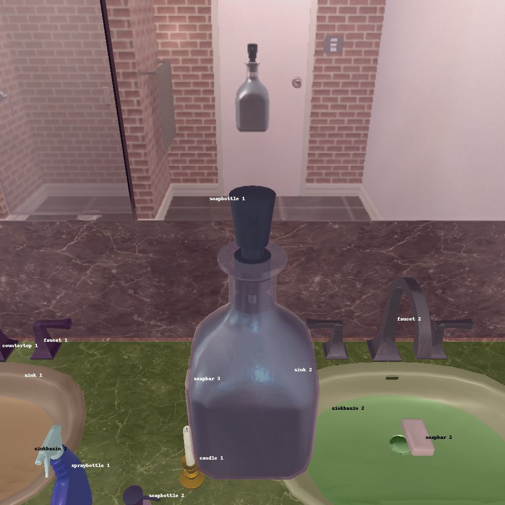

---------------------------------------------------------task: 27---------------------------------------------------------
--------------------------------------------------------------------------------------------------------------------------------------------------------------------
--------------------------------------------------------------------------------------------------------------------------------------------------------------------
Step:--------------------------------------------------------------------------12-------------------------------------------------------------------------------
----------------------------------------
VLM Prompt:
Image1:
**Instruction**
1. Analyze the provided image to identify all visible household objects, focusing on those relevant to the task description "find two soapbottle and put them in garbagecan."
2. Use the analysis of the image and the task hint "The agent must find an object of the desired type, pick it up, find the correct location to place it, put it down there, then look for another object of the desired type, pick it up, return to previous location, and put it down there with the other object." to answer the question: what is the most reasonable action in the choices for the task description "find two soapbottle and put them in garbagecan"?
4. Decide and write the answer using the template: The answer is: (i): , where i is the real number. If there is no desired object in the image, search every place based on **Initial Observation** to find the object. And if no one is exactly correct, choose a similar answer.
**Initial Observation**
You are in the middle of a room. Looking quickly around you, you can see countertop (1), sinkbasin (1-2), sink (1-2), garbagecan (1), drawer (1-2), toilet (1), handtowelholder (1)
**Answer Choices**
(1): go to countertop 1
(2): go to sinkbasin 1
(3): go to sink 1
(4): go to garbagecan 1
(5): go to drawer 1
(6): go to drawer 2
(7): go to sink 2
(8): go to toilet 1
(9): go to handtowelholder 1
(10): put soapbottle 1 in/on sinkbasin 2
(11): clean soapbottle 1 with sinkbasin 1
(12): clean soapbottle 1 with sink 1
(13): clean soapbottle 1 with sink 2
(14): clean soapbottle 1 with sinkbasin 2
(15): examine soapbottle 1
(16): examine sinkbasin 2
**Answer**
Let's think step by step by following the instructions.
----------------------------------------
----------------------------------------
Original Response:
The task is to find two soapbottles and put them in the garbagecan. Looking at the image, we can identify two soapbottles labeled as "soapbottle 1" and "soapbottle 2." According to the task hint, the agent must pick up an object of the desired type and then find the correct location to place it.
In this scenario, the agent should first go to where the soapbottles are located. Soapbottle 1 is visible in the image, so the agent should go there first.
The answer is: (2): go to sinkbasin 1
----------------------------------------
----------------------------------------
>>> Refine Original VLM Response and Get Pure Action: go to sinkbasin 1
----------------------------------------
-----------------------------------------------------------------
Running time: 12.506668329238892 seconds
Total Money: 9.869560000000009
-----------------------------------------------------------------
-----------------------------------------------------------------
Text Observation:You arrive at loc 1. On the sinkbasin 1, you see a faucet 1, a cloth 1, and a soapbar 1.
-----------------------------------------------------------------
UNSUCCEED